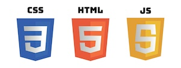

About
This page is built in part to demonstrate work for the Charlotte class ITIS3135 - Front-End Web Application Development for those sections run by Mr. von Briesen. You may find additional information about this course at https://divonbriesen.github.io/teaching/itis3135/.
This course seeks to provide students relevant experience in front-end web application development by building multiple websites using a variety of tools and techniques.
- The tools the course uses specifically include:
- VS Code
- Emmet within VS Code
- SFTP via Filezilla
- Git via GitHub Desktop and GitHub.com
- Various Browser tools
- The Accumulus Validator
- The sites students will build, and which this page links to, should include:
- A personal home portfolio
- This course site
- A design firm site - representing a fictitious/aspirational design/consulting firm for the student and named after them.
- a Crappy page - intended to do all the bad things, so as to avoid them anywhere else
- A whimsical product company
- A student/colleague/peer management tool
- A client project website